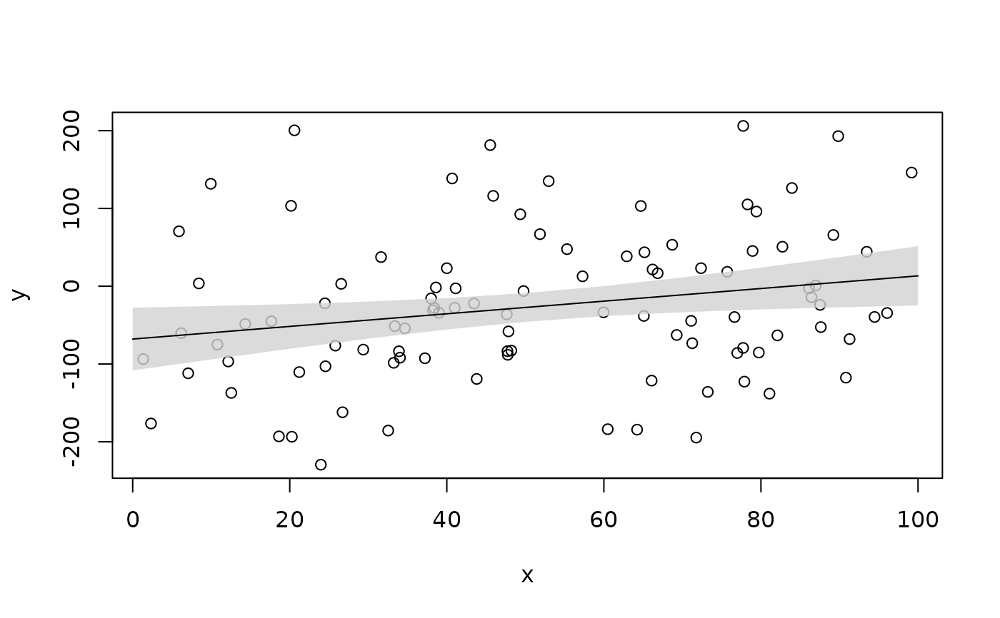
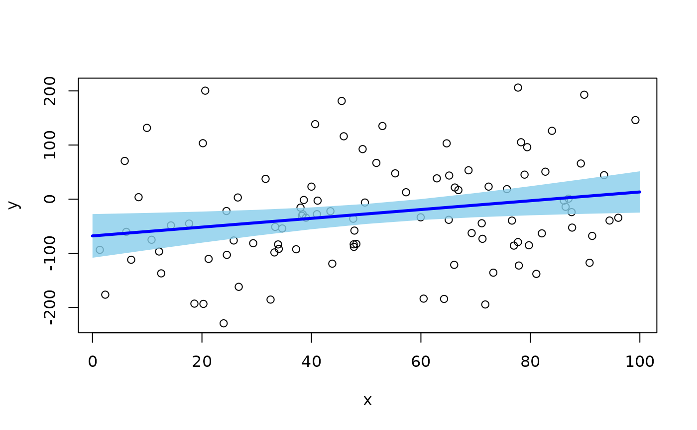
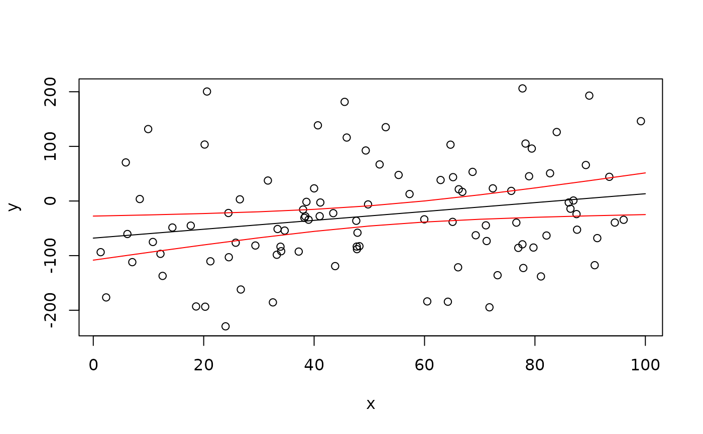
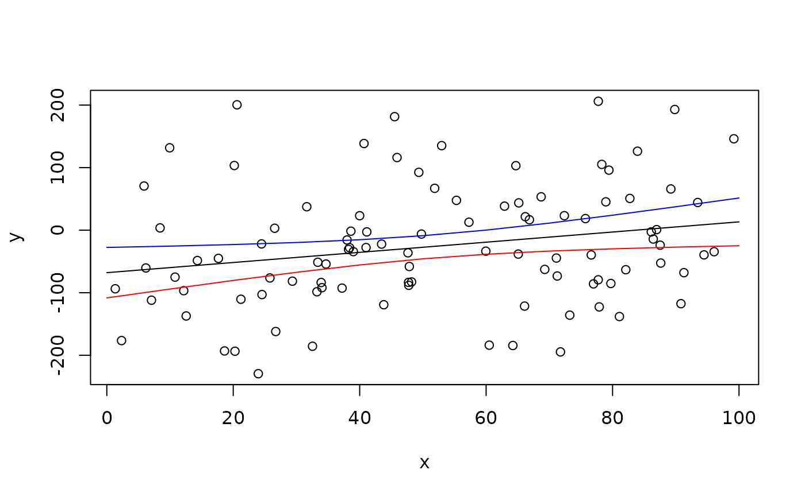

R/add_error_envelope.R
add_error_envelope.RdThis function adds regression lines and associated error envelopes (e.g., confidence intervals, CIs) to plots. This function is designed to streamline plotting codes. Confidence intervals can be added as a polygon or as lines (with or without the fitted line added ontop). For large datasets, adding confidence intervals with lines is much faster.
add_error_envelope( x, ci = list(), type = "poly", add_ci = list(col = scales::alpha("lightgrey", 0.8), border = FALSE), add_fit = list(col = "black", lwd = 1, lty = 1), ... )
| x | A numeric vector defining the x values at which fitted values/CIs will be plotted. |
|---|---|
| ci | A named list with fitted values (optional) and lower and upper CIs (i.e. |
| type | A character defining the method by which CIs will be added to a plot: as lines ( |
| add_ci | (optional) A named list of arguments to customise the appearance of the confidence envelope, passed to |
| add_fit | (optional) A named list of arguments to customise the appearence of the fitted line. |
| ... | Additional arguments: none are currently implemented but depreciated arguments ( |
The function adds model predictions to a plot.
The function is designed for continuous explanatory variables. add_error_bars is used for discrete explanatory variables to add fitted values and associated errors to plots.
Edward Lavender
# Define some data for a model set.seed(1) x <- runif(100, 0, 100) y <- rnorm(100, 0.5*x - 50, 100) # Define model m1 <- lm(y ~ x) # Define predictions xp <- seq(0, 100, by = 10) p <- predict(m1, newdata = data.frame(x = xp), se.fit = TRUE) # List CIs CIs <- list_CIs(pred = p, plot_suggestions = FALSE) # Visualise plot(x, y) #### Example (1): # Add predicted CIs as a polygon and add fitted line ontop using default graphical parameters # Note that type = "poly", and add_fitted = TRUE do not need to be supplied # ... since these are the default options add_error_envelope(x = xp, ci = CIs)  #### Example (2): # Add predicted CIs as a polygon and add fitted lines with user-specified parameters plot(x, y) add_error_envelope(x = xp, ci = CIs, add_ci = list(col = scales::alpha("skyblue", 0.8), border = FALSE), add_fit = list(col = "blue", lwd = 3, lty = 1) )  #### Example (3): # Add predicted CIs as lines, where both upper and lower CIs have identical graphical parameters plot(x, y) add_error_envelope(x = xp, ci = CIs, type = "lines", add_ci = list(col = "red") )  #### Example (4): # Control lower and upper CI lines independently in a nested list # The first element is the lower CI; the second element is the upper CI plot(x, y) add_error_envelope(x = xp, ci = CIs, type = "lines", add_ci = list(list(col = "red"), list(col = "blue")) ) 